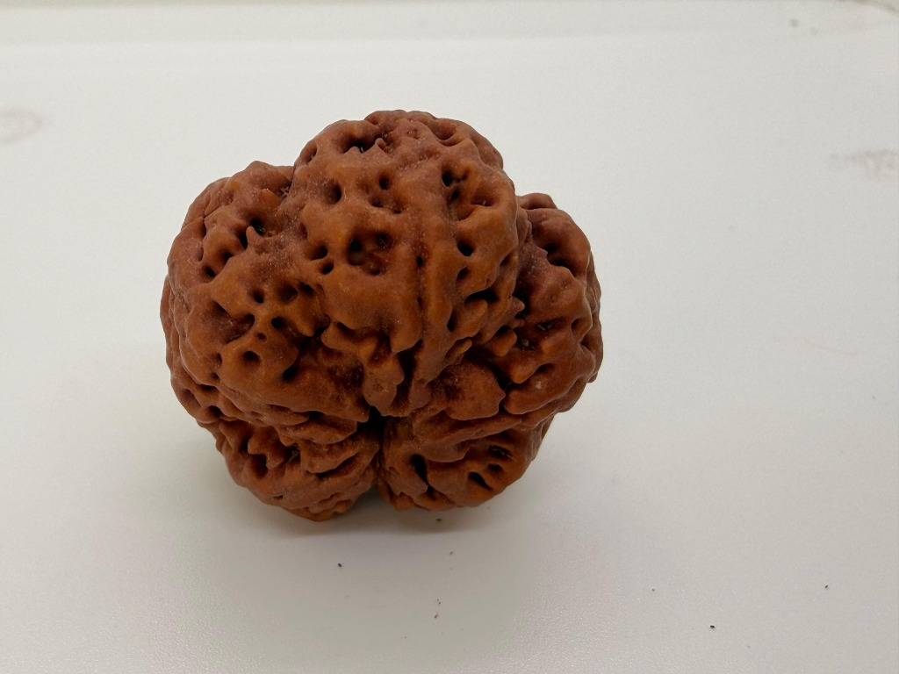
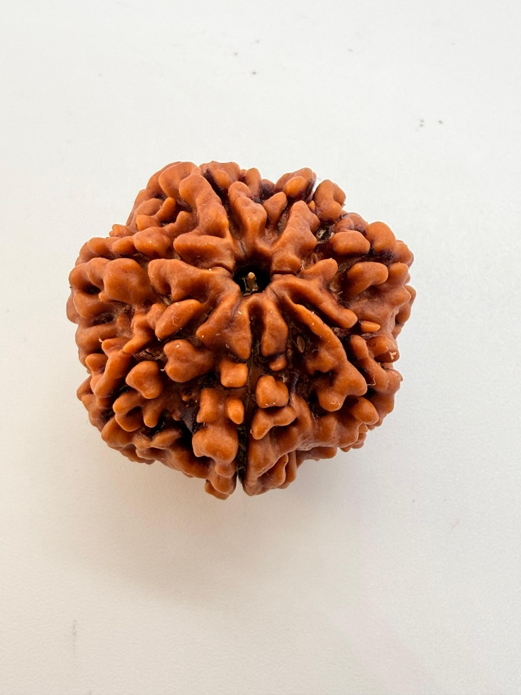
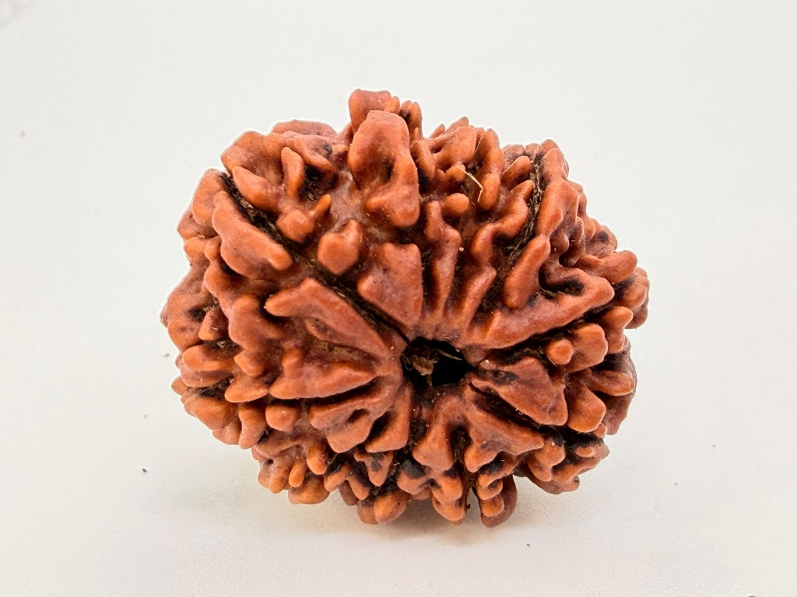
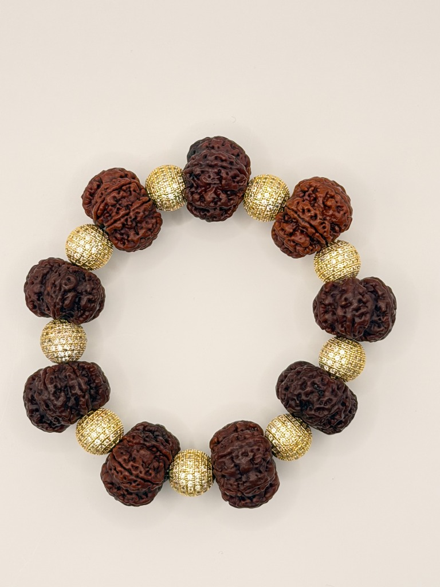

Embark on a spiritual pilgrimage through our curated collection of authentic Rudraksha beads, harvested with reverence from the world's most sacred altitude.
सही चयन से लेकर दैनिक धारण तक, रुद्राक्ष को अपने जीवन का हिस्सा बनाने और उसकी दिव्य ऊर्जा का अनुभव करने का संपूर्ण मार्ग।
From thoughtful selection to daily wearing, discover the complete path to making Rudraksha a sacred part of your life.
आवश्यकताओं और आध्यात्मिक लक्ष्यों के आधार पर सही रुद्राक्ष का चयन।
How to choose the right Rudraksha based on your needs and spiritual goals.
रुद्राक्ष धारण करने के आध्यात्मिक, मानसिक और ऊर्जावान लाभ।
Understand the spiritual, mental, and energetic benefits of wearing Rudraksha.
धारण करते समय पालन किए जाने वाले आवश्यक नियम और दैनिक अभ्यास।
Essential rules and daily practices to follow while wearing Rudraksha.
रुद्राक्ष की पवित्रता और प्रभावशीलता बनाए रखने के लिए वर्जित बातें।
Things to avoid to preserve the sanctity and effectiveness of your Rudraksha.
रुद्राक्ष पहनने, उसकी देखभाल और रख-रखाव के लिए सरल मार्गदर्शन।
Simple guidance on wearing, caring for, and maintaining your Rudraksha.
सनातन परंपरा में रुद्राक्ष के गहरे आध्यात्मिक अर्थ और दिव्य महत्व।
Discover the deeper spiritual meaning and divine importance of Rudraksha in Sanatan tradition.

For peace, health, and profound physical and mental balance.
Explore
Invites financial abundance, prosperity, and dissolves obstacles.
Explore
Bestows supreme bravery, fearlessness, and dynamic female energy.
Explore
A multi-mukhi combination engineered for absolute aura protection.
ExploreEvery soul is searching for exactly what it needs. Ancient wisdom maps specific Mukhis to these life alignments.